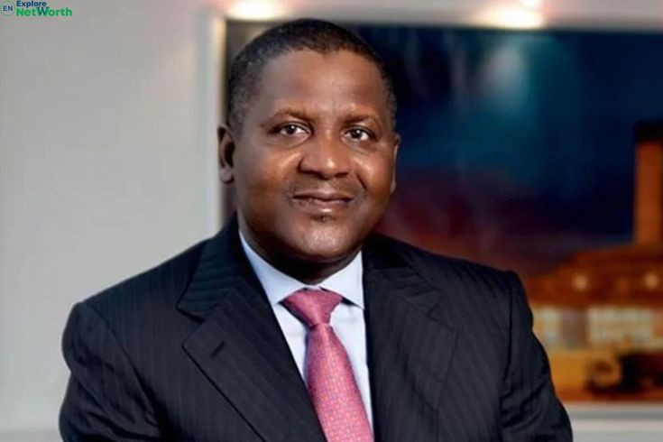
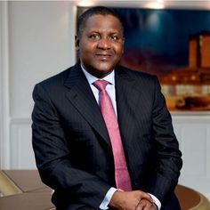

Evènements Marquants
1992 : Son entreprise est réorganisée sous le nom de Dangote Group, devenant un conglomérat diversifié
engagé dans divers secteurs, notamment le ciment, le sucre, la farine, le sel, le pétrole, la
pétrochimie, les télécommunications.
2003 : Le Groupe Dangote est coté en bourse à la Nigerian Stock Exchange, marquant une étape importante
dans la croissance de l'entreprise.
2007 : Dangote devient la première personne du Nigeria à être répertoriée sur la liste Forbes des
milliardaires mondiaux, marquant sa montée en tant que l'un des hommes les plus riches d'Afrique.
Découvrez son histoire


ALIKO DANGOTE
Aliko Dangote: l’homme qui a construit un empire et changé l'image de l'Afrique Aliko Dangote est un entrepreneur
nigérian qui a construit une fortune industrielle dans une variété de domaines tels que le pétrole, le ciment,
le sucre, la farine et le sel. Selonle classement Forbes 2023, il est l'homme le plus riche d'Afrique pour la
12e annéeconsécutive, avec une fortune estimée à plus de 20 milliards de dollars.
Aliko Dangote est né en 1957 à Kano, au Nigeria, et a créé l' esprit d'entreprise de sa famille, qui était
impliquée dans le commerce pendant plusieurs générations. En 1977, à l'âge de 20 ans, il a commencé sa carrière
en empruntant 3 000 $ dollars à son oncle pour établir sa propre entreprise de négoce. En profitant de la remise
de l'économie nigériane dans les années 1980 et 1990, il a ensuite diversifié ses activités en se concentrant
sur la production de bien de consommation courante.
Dangote Group a été créé en 1999 et est actuellement composé de plus de 18 succursales qui sont actives dans 10
pays africains. Avec une capacité annuelle de 45,6 millions de tonnes de ciment, Dangote Group est le premier
producteur de ciment en Afrique. Il est également impliqué dans les secteurs de l'agroalimentaire, de la
logistique, du textile, de l'immobilier et des télécommunications. Il a lancé en 2016 un projet ambitieux de
construction d'une raffinerie de pétrole d'une valeur de 12 milliards de dollars qui devrait être achevée en
2022 et qui vise à réduire la dépendance du Nigeria aux importations de pétrole.
Aliko Dangote est célèbre pour son sens des affaires, sa vision stratégique et sa philanthropie. Pour sa
contribution au développement économique et social de l'Afrique, il a reçu de nombreuses distinctions et
récompenses. Il fait partie du conseil d'administration de la Fondation Bill et Melinda Gates, du comité
consultatif du Forum mondial pour l'Afrique et du conseil présidentiel économique pour le climat des affaires du
Nigeria. Il est aussi fondé la Fondation Dangote.Il travaille dans les secteurs de la santé, de l'éducation, de
l'emploi et du développement de la communauté.
Aliko Dangote est un exemple inspirant pour les jeunes entrepreneurs africains qui aspirent à transformer le
continent grâce à l'innovation et à la création de valeur
 Celebrate Our
Africa
Celebrate Our
Africa